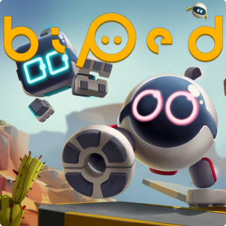
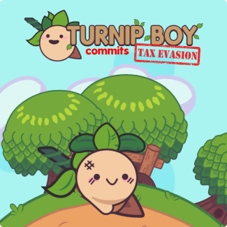
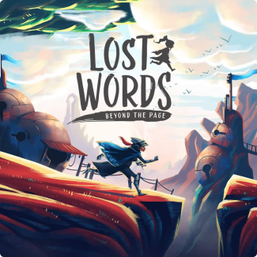
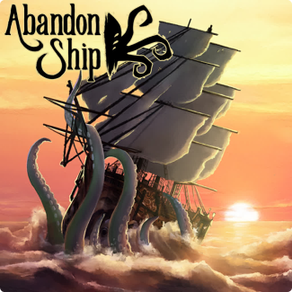

A studio that ships other people's games needed to sell its own story
PlayJoy Studios is a game-development outsourcing house: 25+ specialists porting, co-developing, and building games full-cycle for clients across PC, console, and mobile. Their portfolio was strong — award-winning ports, titles on every major storefront — but their story was scattered. The brief: a website that makes a publisher trust them in the first thirty seconds.
Serious enough for contracts, playful enough for games
B2B game outsourcing lives in an awkward middle: the buyers are producers and publishers doing risk assessment, but the product is fun. A corporate-grey services site would undersell the craft; a site that's all confetti would undersell the reliability. The design had to hold both — process rigor on the surface, game energy underneath.
Deep space purple, one electric accent
The palette starts from a near-black violet universe (#1B0284 → #12001D) — the color of a loading screen before the game begins — cut by a single vivid accent, #A100FF, used for actions and highlights only. Lavender secondary text keeps long service descriptions readable without breaking the atmosphere. The illustrated gamepad mascot, trailing its cable across sections, gives the site a character no stock photo could.
#12001D
#1B0284
#A100FF
#A094C9
Eight services, three work models, zero confusion
The studio offers everything from game porting and full-cycle development to art outsourcing, localization, and HTML5 playable ads — across Unity, Unreal, and half a dozen languages. Instead of a wall of text, the site sorts the offer the way a client actually buys: what you need (services as tabbed cards), how you want to work (fixed price / dedicated team / revenue share), and proof it works (shipped titles with store badges and awards).
Let the shipped games do the talking
The portfolio section leads with recognizable cover art — Biped, Turnip Boy Commits Tax Evasion, Lost Words: Beyond the Page, Abandon Ship — each paired with the exact contribution (full-cycle, port, co-dev) and its storefronts. Turnip Boy's mobile port carries its "Best Mobile Port" award and Google Play featuring right on the card: third-party proof, front and center.




From capabilities list to conviction
The live site gives PlayJoy what an outsourcing studio needs most: instant credibility. A producer landing on the page sees shipped titles, platform coverage, and a clear way to engage — wrapped in a visual world that proves the studio understands games, not just contracts. The gamepad mascot became the studio's visual signature across the site and beyond.